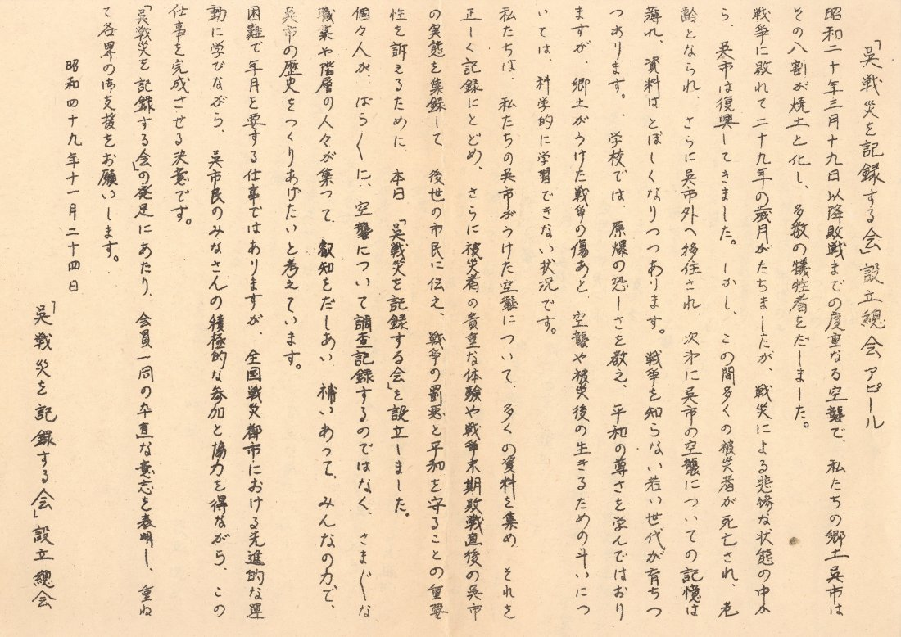
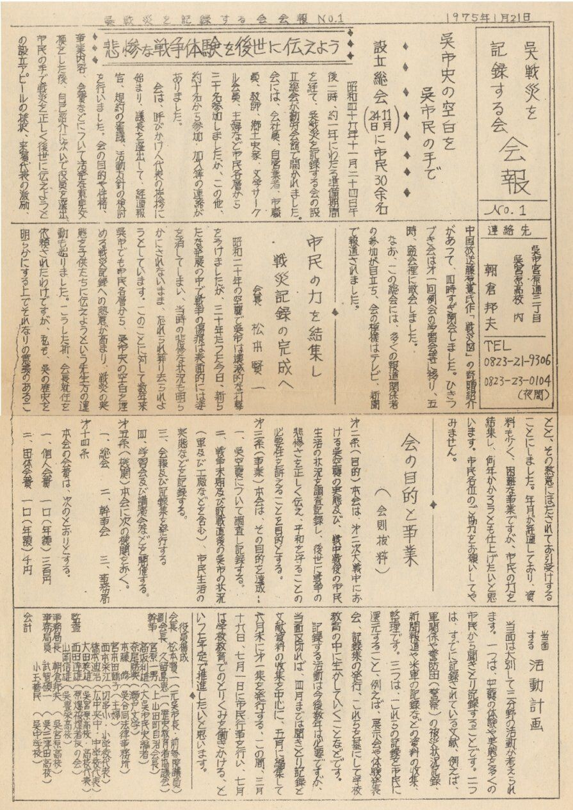
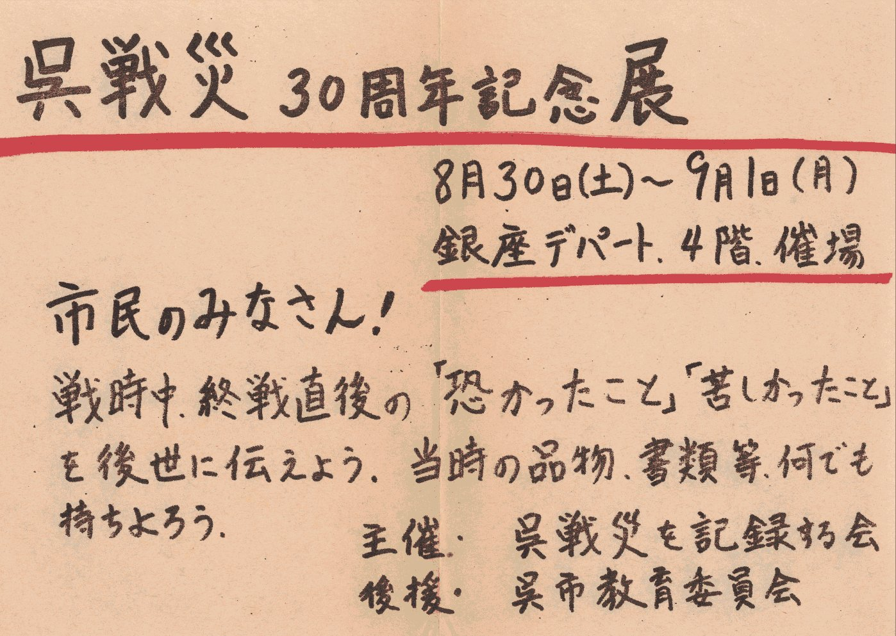
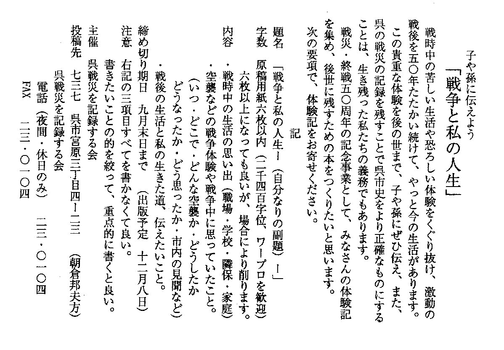

・呉空襲の記録･資料
１ 呉戦災を記録する会
「呉戦災を記録する会」の歩み
1.はじめに
呉は３１万人の小都市ではあったが、東京･名古屋についで空襲機数は第３位、爆弾投下量は第５位の、
日本でも有数の空襲があり、本土で唯一の本格的な海空戦が行われた街であった。
しかし、軍港都市･呉の性格が資料を秘匿したうえに、敗戦処理の中で殆どの資料を焼却してしまい、
戦後は呉市行政の視野外に置かれ、資料は散逸し、体験も埋もれたままになっていた。
後にわかった公的資料は、高松宮が広島市の原爆被害の視察に来たとき、呉にも寄ったので被害状況や救援状況を
簡単なメモにしたらしく、1945（昭和20）年末の呉市議会にそれが報告されたが、市民には一度も公報されなかった。
また、米戦略爆撃調査団へは、詳しく報告していたが、呉市民･議会には知らされないままであった。
呉の戦災は、資料のない点も加わって市民の問題意識にのぼらず、月日を経過していった。
2.会の発足事情
平和教育といえば、ヒロシマ･原爆に関してだけで、地元の呉の戦災は、資料もないので全く扱われなかった。
1972（昭和48）年頃に、呉歴史教育者協議会の会員が全国的な戦災を記録する運動に励まされて、
呉の戦災記録の掘り起こし、それに基づく平和教育を目指した。
翌1974年7月、呉合同法律事務所に、戦災補償相談があって、事務所ニュースで戦災特集を発行したり、
呉地区内の数校で戦災体験の聴き取り調査をして文集を発行すると、マスコミも報道しはじめ、機運が盛り上がってきた。

呉戦災を記録する会「設立総会アピール」

呉戦災を記録する会「会報1号・表側」
 呉戦災を記録する会「会報1号・裏側」
呉戦災を記録する会「会報1号・裏側」
11月に、市民各層約30人が参加して、前市長を会長に、「呉戦災を記録する会」が結成された。
会の活動目標として、
1.被災状況の実態把握をして戦災地図づくりや体験記を集める、
2.各種既存の資料の発掘、
3.戦災遺跡･戦時中の資料･生活遺品を集め保存して戦災記念館を造る、
4.調査･救援･展示･慰霊等を行政に要請、
5.呉戦災を教材化し、小中高校で郷土史や平和教育に利用する、の5点を設定した。
例会を開き、参加者に体験を語ってもらい、聴き取り調査を行ってニュースを発行していった。
3.資料の収集
何一つ判らないので、基礎資料の収集から始めた。
戦時中の呉市街図や呉市街案内記、旧海軍の軍艦名や戦跡、旧海軍工廠の配置図、
旧海軍や呉市の防空体制、警防団や隣組など戦時中の基本体制を知るのもやっとだった。
県警察史や呉市消防史で空襲の基礎資料を得、呉市周辺部の村役場に残る資料で呉市の防空･疎開体制を知ったり、
学校の教務日誌で空襲警報の発令状況を知ったりした。
各地の空襲体験集、特に東京大空襲戦災誌等を参考に、空襲や戦時体制に関係した書籍の収集を行い、知識を増やしていった。
呉空襲に関係した新聞記事のコピーや地元新聞「中国新聞」の収集、内閣情報局の「写真週報」等の雑誌、
焼け野原の呉市街写真、海軍工廠の爆撃跡図面、など少しずつ資料が増えていった。
中でも貴重だったのは、全国空襲戦災を記録する会から贈られた米国戦略爆撃調査団報告の呉関係のフィルムで、
関係者に見せて状況を聞き、被爆状況が良くわかった。
これに刺激されて、国会図書館から米国戦略爆撃調査団報告の呉関係のコピーを入手し、利用を図った。
客観的な資料ではないが、基礎資料の第一は体験記で、学校の学習課題や夏休みの宿題で体験者からの聴き取りが行われ、会員の体験記も少しずつ集まってきた。
体験記を書くとき（聞くとき）の参考事項や留意点
警防団員や消防署員の証言で、呉空襲の全体的な具体像がおぼろげながら判明してきた。
体験記ではないが、自分の体験や他人の空襲体験記を読んで、それを油絵や水彩画にしたものを提供する人もあって、分かりやすく迫力に富み、展示に威力を発揮した。
4. 展示･広報運動
会の発足記念と記録収集の報告のため、呉戦災3０周年記念展を1975年８月末、呉銀座デパートで開催した。

当時のポスタービラ
市民に「戦時中の品物･書類･写真等を持ち寄ろう。苦しかった、怖かった体験を後世に伝えよう。」と呼びかけた。
多くの市民が詰めかけ、戦時生活の遺物遺品･書籍･新聞･雑誌･写真等を提供してくれ、体験記も寄せられた。
これを機に、会員記者のいた中国新聞が、会とともに体験や資料を発掘し、「呉空襲記」として新聞連載をし、「呉空襲記」を単行本にまとめて年末に出版した。
その後は呉市役所ロビーを利用して、３３回忌展、３５周年記念展と続け、４０周年記念展では、
沖縄の１０フィート運動にならった1フィート運動を展開し、16ｍｍカラー映画「赤い月の街ー呉空襲ー」を製作していった。
４５周年記念では、呉で活動する平和団体と共同し、実行委員会を作って、呉の反戦運動や戦争への道･日中戦争、自衛隊の現状など総合的な平和展を開催した。
５０周年記念展では、実行委員会形式をとるとともに、それまでの記録をまとめて、
「ーあれから半世紀.くりかえすなー呉の戦災」写真解説集を出版した。
会では、５０周年記念に際し、呉市に対して、呉空襲の資料や体験記の収集運動、記念館づくりを提起したが、
拒否されたので、会が独自に市民に呼びかけ、体験記を募集して、翌1996年、
「黒い盆地ー呉市民の戦災応募体験記と資料ー」として出版し、呉空襲展を繁華街の街頭で開催してみた。

戦災体験記の募集ビラ
マスコミでも何度か取り上げ、NHKやRCCのラジオ･テレビに出演して、会の運動や空襲について市民に解説した。
2001年には、実行委員会形式をとって、呉市役所ロビーで、９月下旬に、日中戦争７０周年記念呉空襲戦争展を開催した。
5.教育運動
会の発足の発端は、郷土呉の平和教材づくり、教材資料の発掘からであっただけに、集まった体験記や聴き取り資料、文献資料は早速教材化され、授業に利用された。
記録する会が作ったプリントを教職員に配付し、ホームルームの時間や社会科の時間に使いはじめ、高校生の平和意識も高揚し、「呉地区高校生平和の集い」が始まった。
高校生は年２回の集会を自主的に運営し、戦災遺跡の巡検活動を始めた。「受ける平和教育から創る平和教育へ」をスローガンに、空襲や戦争平和問題に関心を持った。
戦争の犠牲になった自分たちと同じ世代の子供が、今も当時のままの年で「殉国の塔」に眠っていることへの思いが、映画「赤い月の街」の主題歌を生み出していった。
教育研究集会でも多くの教職員が呉空襲を取り上げるようになり、会の運動で制定が決まった
７月１日の「呉空襲犠牲者慰霊･平和祈念の日」は正午に、黙祷や空襲の講話を全校で行われるようになった。
戦跡巡りのフィールドワークは好評で、平和･民主団体からの依頼で、年に何度か随行し、解説している。
学校からの講演依頼もあり、戦中戦後の生活を子供に伝える活動も行っている。
6.全国大会参加
全国大会ヘの参加は、1975年の第５回神戸大会からで、数名が参加し、そのつど呉の状況報告をするとともに、新しい情報や運動形態を学び、多大な恩恵を受けてきた。
1984年、第14回呉大会を呉地域の平和･民主団体を総結集して実行委員会を作り、成功させた。
この大会の特色は、記録する会と原爆被爆者や他の平和民主団体との連帯を追及したことである。
原爆被爆者は一般戦災者との均衡を理由に国家補償運動が前進せず、一般戦災者は軍人軍属でなく、被災者も多いことから戦災補償が無く、相互の共闘が課題になった。
原水禁運動は特別視されて、行政や平和団体･労働組合も多大の便宜と支援を与えるが、一般戦災の記録する会はあまり支援を受けず、行政施策の上でも疎外されている。
政治的には、一般戦災を差別･無視することで原水禁運動を押さえ込み、
原爆被災を特別視することで一般戦災犠牲者の要求や一般兵器の軍縮･平和運動を抑える効果を持っている。
この差別分離懐柔政策を改めさせるには、両運動の協同や統一が必要で、それをこの大会で提起した。
大会後の戦跡巡りで、盛大に顕彰される海軍墓地と草むらに埋もれる学徒挺身隊員の「殉国の碑」や空襲地蔵との鮮烈な対比は、大会参加者を怒らせ、新聞投書で呉市を慌てさせた。
7.戦災記念館設立運動
空襲展を開催すると、数千人から１万人近い入場者が何時もいる。呉市史で最大の災害だった呉空襲を展示する記念館は市民の要望にも叶っている。
記録する会では、当初から記念館を設立することは年頭に有ったが、５０周年を機に呉市に設立を請願したら、
「呉市は、自衛隊と共存共栄の関係にある。暗い過去より新しい未来を求め、戦艦大和の技術や潜水艦を展示する海事博物館を造る」ので、
空襲平和記念館は不要だとして、歯牙にもかけなかった。
独自で、小さい平和記念館を造ろうとしたが、「平和記念館を造ろうとする人の輪を拡げる方が大切だ」と言う助言を受け、当面の箱づくりは中止した。
今年になって、呉市の海事博物館づくりの施策に怒った市民の中から、呉空襲平和博物館を造ろうという運動が起こり、
戦争遺跡保存運動とも関連させ、現在、運動を結集中です。
（「呉ピースミュージアム」 ホームページは、
呉ピ－スミュ－ジアム
http://peace-kure.seesaa.net/ ）
8.おわりに
呉戦災を記録する会が出来て２8年になるが、多くの問題点や未達成の課題が残っている。
1.記録する会の事務局体制の不備で地道な活動力が低下し、会員が他の運動団体に移動したり休眠し、空襲展などの行事の時しか結集しなくなった。
2.資料の収集では、国会図書館や防衛庁資料の閲覧が、金と暇の無い会では困難で、基礎資料すらまだ十分に集められていない。
米国資料･艦載機関係の資料収集と分析が特に遅れている。
3.呉戦災記念館の設立運動を未だ巻き起こせず、収集資料が紛失したり、未利用のままになっている。
4.他の平和団体との連携協同が十分にできていない。
空襲･戦争展の時や戦跡巡検の時に実行委員会を作れる程度だ。原水禁運動との連携が是非とも必要だ。
追記・最近の活動
２００４年５月、「呉戦災を記録する会」のホームページを開設し、呉の戦災に関する資料を開示しはじめた。
２００４年７月６日、ＮＨＫ広島放送局が、「呉空襲を知っていますか」を放映した。
これは、７月１日「呉空襲記念の日」にちなんで、「会」の活動や呉空襲の諸課題を指摘した内容でした。
トップページに戻る